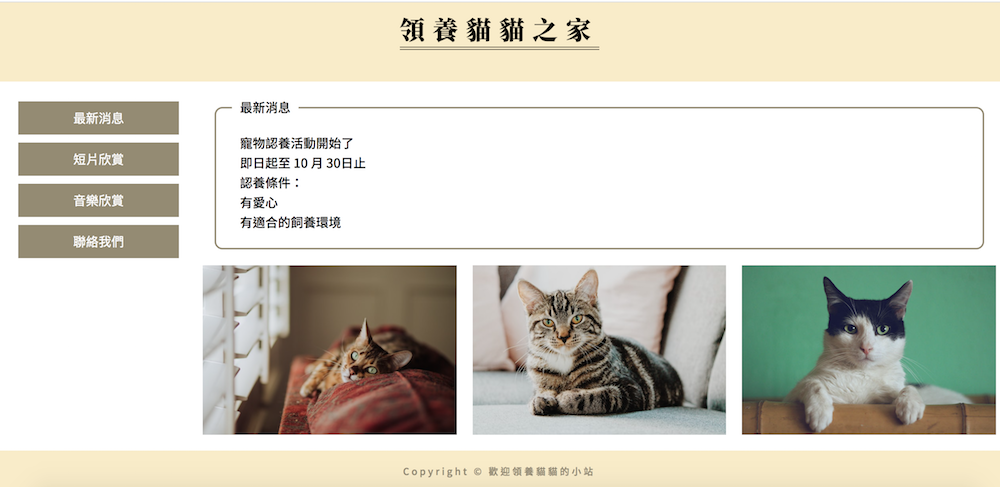

HTML5
今天 HTML5 學了一些 position、float、clear 跟 RWD....。對我來說比較特別的是學到：sticky！我從來沒有用過這個屬性，沒想到他的效果是可以取代原本要用 JS 才能實作出來的（我之前看到都以為要用 JS）真的是一大收穫！
iT邦幫忙這篇文章裡有說到何謂 sticky：
- 在還沒有碰到 scrolling ancestor，就像是 position: relative 一樣
- 在碰到 scrolling ancestor 後，就像是 position: absolute 一樣，位置會固定在相對於參考點的絕對位置上，而這個參考點就是 scrolling ancestor。
老師在講義上關於 sticky 的解釋為：
物件被定位為 sticky 元件，捲軸 (scroll) 開始會跟著捲動，當元件置頂時會定位成 fixed 元件，與上端緊貼(top:0)。捲軸推回原位時會定位成 relative。因此 sticky 定位的特性是介於 relative 與 fixed 切換。
下面做一個簡單 sticky 的效果呈現。請滑動滑鼠讓 sticky 位置在最上面，就可以看到效果了！真的好實用啊！
我是 sticky 的示範！請滑動滑鼠看效果～
然後終於學到 RWD 了呢！目前都還是小練習，寫起來還是頗順手的。最後我們有小練習今天學到的東西，並做 RWD。雖然我覺得配色不好看，但下面是今天最後的練習。（照著老師要的樣式做出來的）
